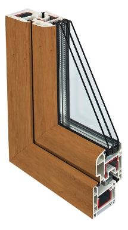

Цветные пластиковые окна
Ламинируем профиль ПВХ для предания окнам цвета и фактуры дерева
Создайте выразительный интерьер с цветными окнами REHAU

Ирландский дуб
- Точная визуализация натурального дерева.
- Яркие нестандартные цвета в тон или в дополнение интерьера.
- Разные фактуры для Ваших пластиковых окон.
Подберите цвет для своих окон:
Больше 50 вариантов цветов и фактур спрашивайте
у наших замерщиков
Расчитать со скидой 70%
или отправить заявку и получить консультацию
Зачем использовать ламинацию
Чтобы придать внешнему виду окна оригинальную выразительность, специалисты применяют ламинацию – приём, при помощи которого можно декорировать своё жилье с учетом самых современных веяний дизайнерского искусства.
При помощи ламинации оконного профиля можно, например, со всей точностью воспроизвести оттенки и структуру древесины: при этом обеспечивается полная визуализация натурального дерева, точно имитирующая расположение волокон. Помимо имитации деревянных поверхностей, применяют пленку самых разных цветов и фактур.
Как окна становятся цветными?
Собственно, процесс ламинации профиля ПВХ состоит в процедуре нанесения на его поверхность декоративных высокопрочных плёнок с применением специального клея и ламинирующих установок.
Плёнку прочно соединяют с профилем. При этом внешней стороне пленки свойственна высокая стойкость к повреждениям. В частности, цветное пластиковое окно, прошедшее процесс ламинации, стойко переносит температурные колебания в диапазоне от -80°С до +130°С, оно исключительно стойко к солнечному излучению.
Пластиковые окна, прошедшие процесс ламинации профилей, имеют срок службы гораздо больший, чем не ламинированные окна. В сравнении с окнами из массива дерева, они значительно дешевле.
Отзывы о цветных пластиковых окнах
посмотреть еще отзывы
Алёна,
Договор № 09.10.33512.13
Дата размещения: 13 декабря 2013 года
Поставили нам окна во всей квартире.Все очень понравилось)))компания на 5+.Все очень любезные,гибкая система скидок!!!буду советовать всем!!!Сервис был на высоте,во-первых с поставкой получилось быстрее,во-вторых два раза приезжал замерщик Алексей,ему большое спасибо...
прочитать полностью
оставить отзыв